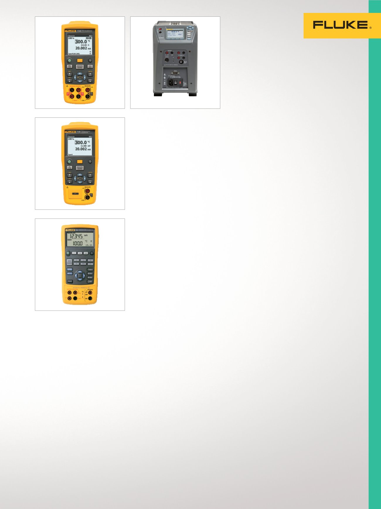

17
Étalonnage de la température
Étalonneurs de
température à main
Pour l'étalonnage de trans-
metteurs de température,
panneaux de mesure et autres
appareils se connectant à des
capteurs de température.
Étalonneur Process RTD 712
Performances, durabilité et fiabilité
exceptionnelles dans un outil
compact, léger et facile à transporter.
•
Mesure de température à partir
d'une sortie de sonde RTG
•
Simulation de sortie RTD
•
Mesure des RTD supplémentaires
grâce à la fonction de mesure en ohm
•
Simulation de RTD supplémentaires
à l'aide de la fonction de source
de résistance
•
Étalonnage identifiable NIST
Étalonneur de thermocouple 714
Performances, durabilité et
fiabilité exceptionnelles dans un
appareil compact, léger et
facile à transporter.
•
Mesure de température à partir
d'une sortie de sonde TC
•
Simulation de sortie TC
•
Étalonnage d'un transmetteur TC
linéaire avec la fonction
de source mV
•
Étalonnage identifiable NIST
Étalonneur de température 724
Puissant et facile d'emploi avec ses
fonctions de mesure et de source pour
tester et étalonner la quasi-totalité des
instruments thermométriques.
•
Mesure de RTD, thermocouples,
ohms et volts pour tester capteurs et
transmetteurs
•
Source/simulation de thermo-
couples, RTD, volts et ohms pour
l'étalonnage de transmetteurs
•
Tests rapides de linéarité avec
incréments de 25 % et 100 %
•
Étalonnage identifiable NIST
Sources de
températures de
terrain multifonctions
Rapides, légères et portables
avec un contrôle de tempéra-
ture de précision traçable selon
les normes nationales. Pour
l'étalonnage de thermocouples,
RTD, PRT et autres capteurs
de température.
Puits de métrologie de
terrain 9142
Portabilité, vitesse et fonctionnalité
maximalisées pour l'environnement de
processus industriel.
•
Plage de températures
de –25 °C à 150 °C
•
Précision d'affichage de ± 0,2 °C
sur toute la plage
•
Afficheur deux canaux intégré
pour PRT, RTD, thermocouple et
courant 4-20 mA
•
Afficheur thermométrique de
référence intégré en option
•
Étalonnage agréé
Puits de métrologie de
terrain 9143
Portabilité, vitesse et fonctionnalité
maximalisées pour l'environnement
de processus industriel.
•
Plage de températures
de 33 °C à 350 °C
•
Précision d'affichage de ± 0,2 °C
sur toute la plage
•
Afficheur deux canaux intégré
pour PRT, RTD, thermocouple et
courant 4-20 mA
•
Afficheur thermométrique
de référence intégré en option
•
Étalonnage agréé
Puits de métrologie de
terrain 9144
Étalonnage de précision avec
accélération rapide de la
température pour l'environnement
de processus industriel.
•
Plage de températures
de 50 °C à 660 °C
•
Atteint 660 °C en 15 minutes
•
Précision d'affichage de
±0,35° C à 420° C à
±0,5° C à 660° C
•
Afficheur thermométrique de
référence intégré en option
•
Étalonnage agréé
712
724
9142/9143/9144
714